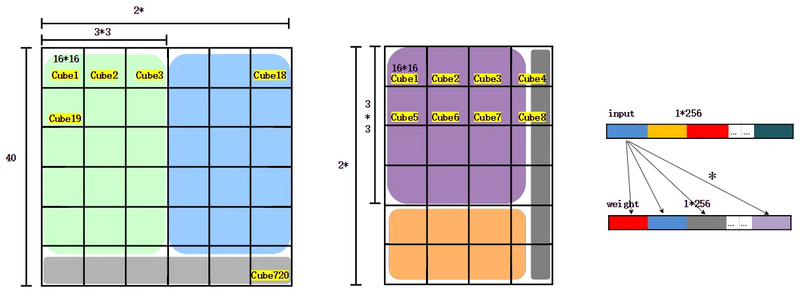

# 前置信息
（1）本文讲解使用的例子
以如下的卷积为例，进行昇腾 Im2Col 卷积过程：
- Input 输入维度为 NHWC ：【2，25，25，17】
- 外圈蓝色代表 pad
- Kernal 维度为 CCHkWk ：【34，17，3，3】
- 操作为 3*3 卷积 pad=1, Group=1, Stride=1， 2D 卷积
- 得到输出的维度 为 NHWC : 【22，25，25，18】
从图上可以轻易看出相关信息。
现在想起来，光是遇到你这个家伙，就感觉自己赚到了。
------ 大家好啊 我是 暮冬 Z 羡慕
（2）矩阵乘运算单元
昇腾达芬奇架构设计了 16*16 的矩阵乘运算单元，能够提供强大的并行乘加计算能力，可以以一条指令实现两个 16*16 的矩阵相乘的运算。所以昇腾 Im2Col 卷积的目的就是让卷积能够高效地利用 “矩阵乘运算单元” 进行计算。
感兴趣的可以阅读昇腾架构介绍书籍。
矩阵计算单元可以⽤⼀条指令完成两个 16×16 矩阵的相乘运算（标记为 163，也是 Cube 这⼀名称的来历），等同于在极短时间内进⾏了 163＝4096 个乘加运算，并且可以实现 FP16 的运算精度。如图 3-7 所⽰，矩阵计算单元在完成 C＝A×B 的矩阵运算时，会事先将矩阵 A 按⾏存放在输⼊缓冲区中，同时将矩阵 B 按列存放在输⼊缓冲区中，通过矩阵计算单元计算后得到的结果矩阵 C 按⾏存放在输出缓冲区中。在矩阵相乘运算中，矩阵 C 的第⼀元素由矩阵 A 的第⼀⾏的 16 个元素和矩阵 B 的第⼀列的 16 个元素由矩阵计算单元⼦电路进⾏ 16 次乘法和 15 次加法运算得出。矩阵计算单元中共有 256 个矩阵计算⼦电路，可以由⼀条指令并⾏完成矩阵 C 的 256 个元素计算。 摘自《昇腾 AI 处理器架构与编程》
# 权重排布
昇腾 Im2Col 五维卷积加速算法 基本流程：
输入为 nhwc 输出为 nhwc
权重维度变化： 权重的维度变化离线进行，不消耗神经网络推理时间。（神经网络推理大致分为 模型转换 量化 推理三个步骤，权重的维度转换可以在模型转换时进行，不占用推理的时间）。下面是权重变换的分步流程，代码实现可以一步完成，也可以分多步完成（因为不影响推理时间。）
上方的变换如果比较抽象的话，可以结合后面的流程来理解。
# 权重 从 kernel 4D 变换到 kernel 2D
上图是 Kernel 2D 的数据排布方式，维度为【2*3*3*16，34】，为了简便，跳过昇腾 5D 结构，直接从 4D 转到 2D。下面介绍 4D 数据和 2D 数据的一一对应关系。
- D 图 ① 覆盖区域表示 一个卷积核【17，3，3】展开成 2D 中的一列。对应于 A 图中一整个卷积核。34 个卷积核将展开为 34 列。因此每列代表一个卷积核。
- B 图，卷积核通道数为 17，需要补零为 16 的倍数 32，并拆分成 2 块（分别是紫色、黄色）。E 图：每一列（每一个卷积核）的紫色部分②是卷积核通道方向拆分的第一块（B 图中的紫色），黄色部分③是拆分的第二块（B 图中的黄色）。
- 拆分的每一块（比如紫色部分）又分成 3*3（kernel 行 * 列），F 图: ④覆盖的是 kernel 第一行 (对应于 C 图中的④的部分)，⑤覆盖的是 kernel 第二行（对应于 C 图中⑤的部分），相似的⑥覆盖的是 kernel 第三行（对应于 C 图中⑥的部分）。3*3 卷积核一共就三行
- 每一个紫色的小方格代表通道方向的 16 个数。
- 至此，kernel 4D 和 kernel 2D 所有的数据都一一对应了。例如 F 图中：⑦代表第 6 个卷积核、通道拆分的第二块、第一行、第二列、通道方向的 16 个数。
通过上述对应关系，我们不难得到维度为【2*3*3*16，34】的卷积核 2D 形式。由于昇腾卷积算法的 AI 计算核心是 16*16 的矩阵乘运算单元，同时为了取数方便，还需要将卷积核 2D 转换为大 Z 小 N 排布方式。
# 权重 从 kernel2D 变换到大 Z 小 N
第一步，将 2D【2*3*3*16，34】中 34 补零为 16 的倍数，即 48，得到【2*3*3*16，48】。
第二步，将其按照 16*16 的方格进行划分，得到【2*3*3，3】个【16，16】的小块。（图中画成了 4 个小块，实际应该是 3 个，示意图，见谅）
第三步，将这些小块按照大 Z 小 N 的顺序进行排布。大 Z 指的是外部按照行优先，将按照 Cube1 到 Cube8 这种 “Z” 字形排布；小 N 指的是内部按照列优先，即每个 16*16 的 Cube，先排第一列，然后是第二列... 详见最右边的彩色表示。
多说一句，之所以专门按照 “小 N” 排布，是因为在矩阵运算中，权重作为矩阵乘的第二个参数，数据是按列取的。这就意味着在实际内存中要跳着取数（内存中都是按照行优先排序），自然效率低。提前将其按照列优先的方式进行排布，那么在矩阵乘运算中可以连续取数。至此，我们得到了 【2*3*3，3，16*16】的权重大 Z 小 N 排布形式，这种形式使得能够一次性取出 256 个数参与计算，效率很高。
下面的代码一次性完成了 权重 4D nhwc 到权重大 Z 小 N 排布，仅供参考。还是那句话，权重的变换离线进行，不占用宝贵的推理时间，所以无须关心转换的效率。完整代码可以下载 加速算法模拟，并运行其中的 TestAscendConvLayer(); 函数。可以看到三个测试函数，它们的区别在于不同的输入排布方式。
//9. 测试 昇腾 卷积算法加速 NCHW 输入， NHWC 输出 | |
// TestAscendConvLayer(); | |
//10. 测试 昇腾 卷积算法加速 NCHW 输入， NCHW 输出 | |
// TestAscendConvLayerNCHW(); | |
//11. 测试 昇腾卷积算法加速 NHWC NHWC 输入， NHWC 输出 | |
// TestAscendConvLayerNHWC(); |
void WeightTrans_A(const float* filters, const TensorDim weight_dim, Ascend5Dim we_5D_dim, float* we_tran5D, | |
AscendTransform5Dim we_tran5D_dim, int CUBE_row, int CUBE_col){ | |
int lastdim4 = we_tran5D_dim.move * we_tran5D_dim.channel * we_tran5D_dim.LW * we_tran5D_dim.cube; | |
int lastdim3 = we_tran5D_dim.channel * we_tran5D_dim.LW * we_tran5D_dim.cube; | |
int lastdim2 = we_tran5D_dim.LW * we_tran5D_dim.cube; | |
int single_filter_num = weight_dim.c * weight_dim.h * weight_dim.w; | |
int single_filter_channel = weight_dim.h * weight_dim.w; | |
for(int ch_cube=0; ch_cube<we_tran5D_dim.batch; ch_cube++){ // 通道方向块 ch_cube | |
int index_1 = ch_cube * lastdim4; | |
for(int hk=0; hk<we_tran5D_dim.move; hk++){ //filter 长 | |
int index_2 = index_1 + hk * lastdim3; | |
for(int wk=0; wk<we_tran5D_dim.channel; wk++){ //filter 宽 | |
int index_3 = index_2 + wk * lastdim2; | |
for(int cout_cube=0; cout_cube<we_tran5D_dim.LW; cout_cube++){ //cout 方向块 | |
int index_4 = index_3 + cout_cube*we_tran5D_dim.cube; | |
for(int cube_row=0; cube_row<CUBE_row; cube_row++){ | |
for(int cube_col=0; cube_col<CUBE_col; cube_col++){ | |
int index = index_4 + cube_row*CUBE_col + cube_col; | |
if((cout_cube*CUBE_col+cube_row)>=weight_dim.n || (ch_cube*CUBE_col+cube_col)>=weight_dim.c){ | |
we_tran5D[index] = 0; | |
}else{ | |
// 第几个 filter 第几个通道 第几行 第几列 还要注意 大 Z 小 N 排布方式 大 Z 小 N 排布方式（行变列，列变行） | |
int index_from = (cout_cube*CUBE_col+cube_row)*single_filter_num + (ch_cube*CUBE_col+cube_col)*single_filter_channel + hk*weight_dim.w+ wk; | |
we_tran5D[index] = filters[index_from]; | |
} | |
} | |
} | |
} | |
} | |
} | |
} | |
} |
# 输入排布
输入 tensor 的内存排布为 nhwc 输出为 nhwc
昇腾算法的维度详细变换如图下图所示。这里展示了输入 input 从 4D 维度转换到 昇腾 5D 结构，然后再转换到 2D 结构，最后转换到大 Z 小 Z 维度。写这么详细只是为了方便读者理解，而在实际操作中，由于 Input 的变换是在线进行，消耗宝贵的推理时间，所以如华为昇腾书中所说：input 先是从 4D 维度 通过软件算法转换为 昇腾 5D 维度（在模型推理过程中这一步可能不需要，因为中间层的 tensor 已经处于昇腾 5D 维度了），之后从昇腾 5D 维度通过 硬件直接转换到大 Z 小 Z 排布（模型推理过程肯定是边转换变计算，所以不会将整个 tensor 转换为大 Z 小 Z 之后，才进行矩阵运算阶段的。本博客为方便，将整个 tensor 完全转换到大 Z 小 Z，再进行后面计算。）
说完这些，就可以介绍一下昇腾算法极致高效的输入的排布转换过程了！
# 输入 从 Input 4D 到 Input 5D
还是再强调一下，昇腾可以做到整个模型的中间层的 tensor 均保持昇腾 5D 的维度，所以思考一下，可能只有最初输入到模型的 tensor 需要 从 Input 4D 转 到 Input 5D，或者再数据预处理的时候就将数据处理为 5D 排布。
- G 图是最原始的 Input4D 结构，当然，batch 维度 N=2 没有画，只画了一个。它的维度是【25，25，17】
- H 图为昇腾 5D 结构图，首先要将通道方向的 17 补齐为 16 的倍数 32，同时每 16 个进行一次拆分，拆成两组。
- 最后注意一下数据的排布顺序就好了：注意 5D 结构中，K_cube 位于最内层，这些数据是连续的，所以先把 高 h=1, 宽 w=1 位置的 16 个数据排在一起。
- 紧接着将宽度方向 25 个 K_cube 排在一起，变成 25*16
- 然后再遍历高的方向。变成 25*25*16
- 最后是遍历两组，得到昇腾的 5D 结构【2，25，25，16】
此处数据搬运较为简单，<!-- 可以参考代码加速算法模拟 -->
# 输入 从 Input 5D 直接搬到 大 Z 小 Z
昇腾通过专门设计的硬件，将 input 从 5D 格式直接搬到 大 Z 小 Z 排布。想要知道怎么搬以及为什么这么搬，还真不得不把其 2D 排布讲明白。 《昇腾 AI 处理器架构与编程》这本书中直接跳过了 2D 排布，导致晦涩难懂。
# Input 5D 到 Input 2D
所以我们直接看 Input2D 与 Weight 2D 的对应情况，如下图所示。
- J 图为 input2D 【25*25，2*3*3*16】 K 图为 Weight2D 【2*3*3*16，34】。再回忆一下 Weight2D 数据每一行和每一列的数据的意义，它的一列数据 2*3*3*16 代表什么呢？ 2*3*3*16 代表一整个卷积核，2 代表该卷积核通道方向拆成两块，那么 3*3*16 就是每一块的 高 * 宽 * K_cube。
- 好巧！Input2D 的一行也是 2*3*3*16！（废话，不一样就没法算了）。既然 weight2D 一列数据的意义一清二楚，那么对应的 Input2D 数据一行的意义也就呼之欲出啦！ Input2D 的一行 就是卷积核在某个滑动窗口位置对应的 input 数据。例如，Input2D 的第一行，就对应于 I 图 3*3 的彩色窗口数据（没有 Pad 的情况下）。
- 也就可以推知，Input2D 的每一行绿色部分，就是 I 图通道方向拆分的第一块（拆分的绿色部分）；每一行的的蓝色部分，就是 I 图通道防线拆分的第二块（中间深蓝宽度 1，和补齐的浅蓝 15）
- 那么，为什么 Input2D 有足足 625 行呢？因为滑动窗口纵向滑动 25 次，每次纵向滑动，都包含横向的 25 次，总共 625 次。
假如直接计算 Input2D 矩阵乘 Weight2D，卷积计算就得到最终结果啦！这就是普通的 Im2Col 算法，不清楚的小伙伴们还可以去读一下 Im2Col 算法 NCHW 和 Im2Col 算法 NHWC。
从 2D 的角度来看，算法是不是很简单啊。
不要高兴的太早，还没完呢。
# Input 2D 到 大 Z 小 Z
接下来是将 Input2D 转换到大 Z 小 Z 排布
第一步，将 Input2D【25*25，2*3*3*16】中 25*25 补零为 16 的倍数，即 640，得到【640，2*3*3*16】 ，如图 L。
第二步，将其按照 16*16 的方格进行划分，即得到【40，18】个【16，16】的小块，如图 M。
第三步，将这些小块按照大 Z 小 Z 的顺序进行排布。大 Z 指的是外部按照行优先，将按照 Cube1 到 Cube720 这些块按照 “Z” 字形排布；像 N 图上方排成一行；小 Z 指的是内部也按照行优先，即每个 16*16 的 Cube，先排第一行，然后是第二行... 详见 N 图中的颜色表示。
上图来自《昇腾 AI 处理器架构与编程》，矩阵 A 的排布为大 Z 小 Z，矩阵 B 的排布为大 Z 小 N，大家可以再理解一下。
至此，Input 的大 Z 小 Z 排布已经实现，接下来就是 16*16 的矩阵乘了。

- Input 现在是【40，18】个【16，16】小块，如左图，当然，它现在处于大 Z 小 Z 的一维排布。
- Weight 现在是 【18，3】个【16，16】小块，如中间图，当然，它现在处于大 Z 小 N 的一维排布。
- 不知道分块矩阵乘的小伙伴可以再搜索下 《线性代数》中的分块矩阵乘运算。
- 内部，进行两个 16*16 块的矩阵乘运算，由于 weight 已经按照列优先进行排布，所以矩阵乘的顺序如上图最右边所示。
- 外部，对【40，18】和【18，3】做矩阵乘运算。
- 至此，我们得到了【640，18】的矩阵。
- 然后将上图两图灰色部分对应的多余数据裁掉，就得到了卷积结果【25，25，34】 ，当然，还得遍历一下 batch，得到【2，25，25，34】
# Input5D 搬到大 Z 小 Z
前两小节介绍了 Input5D 变换到 Input 2D，再变换到 大 Z 小 Z 的过程。而在昇腾芯片中，从 Input5D 到 Input2D 由硬件一步实现。
如果前面两小节已经看明白了的话，那么搬运的秘密就呼之欲出了。
- 看上图，左图是 Input 的 5D 维度排布【2，25，25，16】，右边是 Input 2D 排布【25*25，2*3*3*16】。中间是个滑动窗口示意图，3*3，因为本文中用的例子就是 3*3 卷积。
- 回忆一下右边 2D 排布的数据的意义，每一个小格子是通道方向的 16 个数，每一行是滑动窗口每一个位置对应的 2*3*3*16 个数。滑动窗口纵向滑动 25 次，每次要横向滑动 25 次，所以有 625 行数据，再加上补齐的 15 行，才达到了 640 行数据。
- 那么右图红色 1 的位置是滑动窗口 a 在第一个位置所对应的 16 个数字；红色 2 的位置是滑动窗口 a 横向滑动一次对应的 16 个数字；红色 3 的位置是滑动窗口 a 横向滑动第三次对应的 16 个数字；依次类推，红色 16 的位置是滑动窗口横向滑动第 16 次对应的 16 个数字。这 16 次滑动，滑动窗口的 a 在左图从 1 滑倒 16！
- 也就是说，右图红色框的 1-16 与左图 1-16 一一对应！
- 再来回忆一下，左图中 1-16 这 16*16 的数据是连续的吗？是！（不清楚的再回去看 Input 的维度变换）
- 那么右图中的 1-16 这 16*16 个数据是连续的吗？它是！ 根据大 Z 小 Z 排布，这红色框中 16*16 的数据刚好被分到一个小 Cube 中！
- 昇腾能够从 Input5D 中一次性拷贝 256 个数据到大 Z 小 Z 排布！
<!--
# 代码模拟
当然，我猜测昇腾应该是设计了 16 个 DMA 组成的 DAM 队列，来实现一次 256 个数据的搬运。真的是相当高效了！
我提供了 C 语言代码模拟整个昇腾的卷积运算流程。完整代码可以在 加速算法模拟下载，该工程提供了以下三个测试函数，它们的区别在于不同的输入排布方式。
//9. 测试 昇腾 卷积算法加速 NCHW 输入， NHWC 输出 | |
// TestAscendConvLayer(); | |
//10. 测试 昇腾 卷积算法加速 NCHW 输入， NCHW 输出 | |
// TestAscendConvLayerNCHW(); | |
//11. 测试 昇腾卷积算法加速 NHWC NHWC 输入， NHWC 输出 | |
// TestAscendConvLayerNHWC(); |
还要再提一句，该工程中采用 C 语言函数 memcpy () 来模拟昇腾的批量数据拷贝功能。数据搬运中并不是所有的情况都是 256 个数据内存连续的，所以可以看到代码运行中分两次、三次才能拷贝完 256 个数据的情况。昇腾硬件中设计的 DMA 队列不会出现这种问题。此外，硬件肯定设计为边搬运边计算的工作模式，不会像我工程中完全得到 Input 大 Z 小 Z 排布再进行矩阵运算。
这是隐藏的注释，不会显示。 -->
文章好长啊！画了好多图！
# 后记
本博客目前以及可预期的将来都不会支持评论功能。各位大侠如若有指教和问题，可以在我的 github 项目 或随便一个项目下提出 issue，或者知乎 私信，并指明哪一篇博客，我看到一定及时回复，感激不尽！